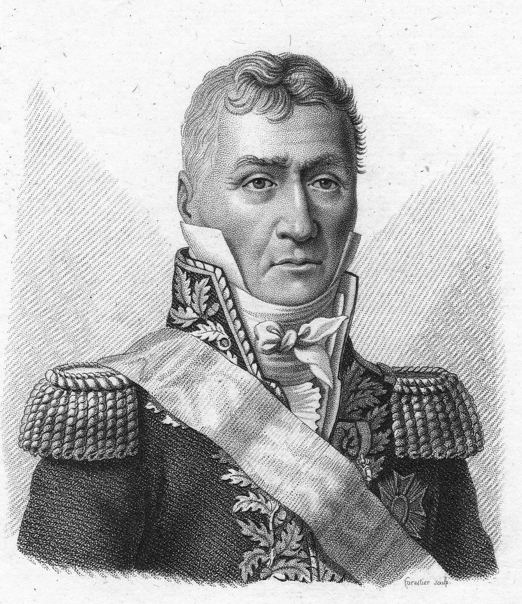
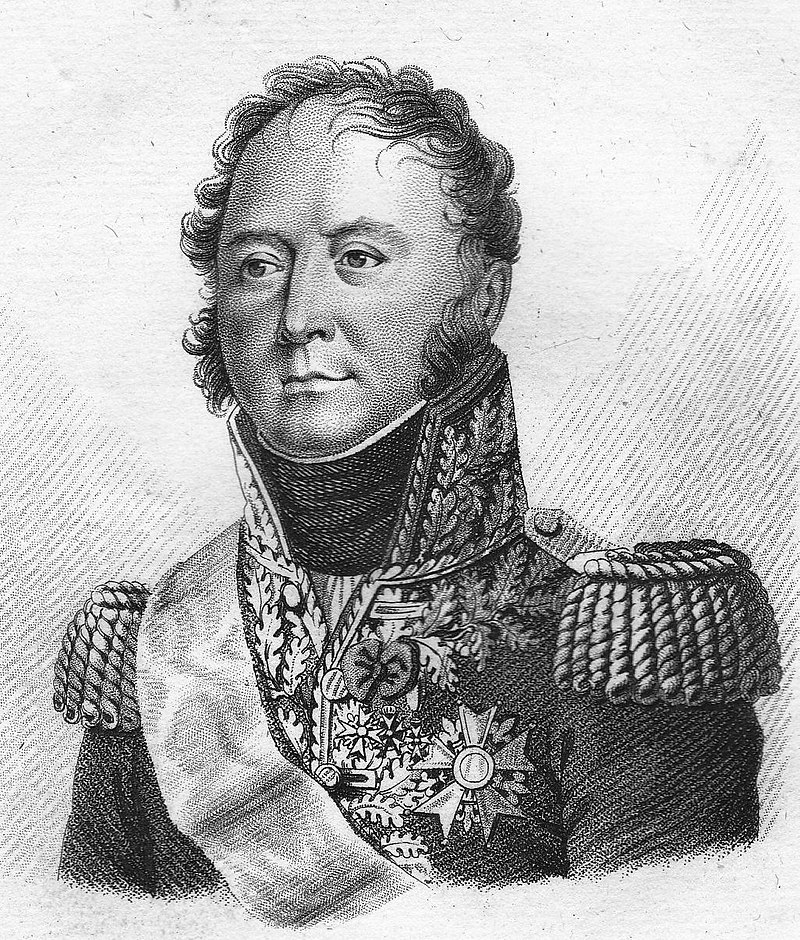
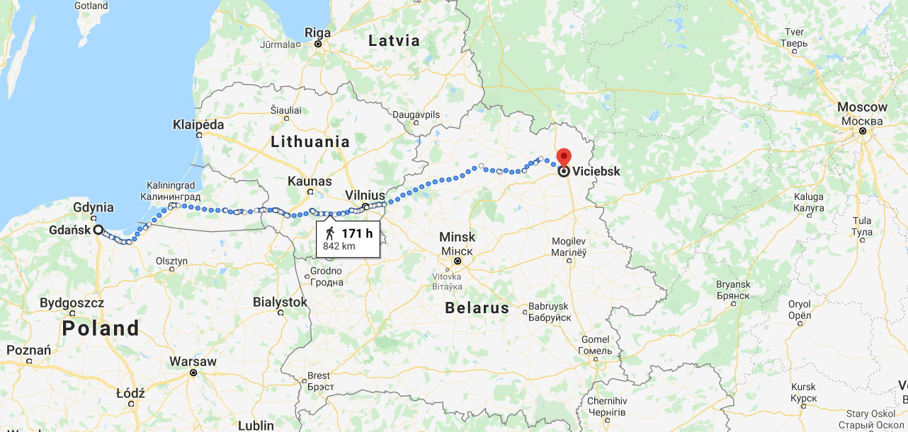

멈추지 못한 발걸음 (2) - 나폴레옹, 스스로를 속이다
게시: 2020-02-17T06:30:36+09:00
당시 그랑다르메 소속 병참장교(commisaire de guerre)였던 벨로 드 케르고르(Alexandre Bellot de Kergorre)에 따르면, 나폴레옹이 비텝스크에 도착했을 즈음 이미 그랑다르메는 네만 강을 넘었을 때에 비해 2/3로 줄어있었습니다. 이는 전투에 의한 것이 아니라 강행군과 식량 부족, 불결한 식수 등으로 인한 질병과 부상, 낙오, 탈영 등으로 인한 비전투 손실이었습니다. 하지만 일개 민간 계약자에 불과한 병참장교가 과연 전체 그랑다르메의 인원수를 정확하게 파악할 수 있었을까요 ? 없었을 것입니다. 당시 전체 그랑다르메의 정확한 인원수나 전투 준비 상태에 대해 아는 사람은 없었습니다. 나폴레옹 본인조차, 아니 다른 사람은 몰라도 황제 나폴레옹 본인만큼은 그랑다르메의 실제 상태에 대해 새빨간 거짓 정보만 듣고 있었습니다. 물론 각 일선 지휘관, 그러니까 중대장이나 대대장, 사단장 등은 제대로 된 정보를 가지고 있었습니다. 어쩌면 군단장인 원수들도 각자가 맡은 군단에 대해서는 제대로 된 정보를 파악하고 있었을 것입니다. 그러나 나폴레옹에게 올라가는 보고서는 철저히 각색되었습니다. 드뎅 드 젤더(Bon de Dedem de Gelder) 장군의 회고록에 따르면 당시 모든 부대의 지휘관들은 인원 보고시에 너나 할 것 없이 모두 실제보다 숫자를 부풀려 보고했습니다. 이유는 간단했습니다. 질책을 받지 않기 위해서였지요. 그러다보니 그런 보고들이 합산되어 나폴레옹에게 보고서 형태로 올라갈 때는 매우 과장된 숫자가 되었습니다. 드 젤더의 계산에 따르면 당시 나폴레옹은 실제보다 약 3만5천이 더 많은 병력을 가지고 있다고 착각했습니다. 그러나 그 수치조차 정확하지 않았을 것입니다. 드 젤더 본인도 고위 장교인 장군이었으니, 그에게 올라가는 보고가 얼마나 부풀려진 것인지 누가 알겠습니까 ? 이 모든 허위와 기만은 결국 누구의 책임이었을까요 ? 결국 나폴레옹은 부정직한 부하들에게 속은 희생양이었을까요 ? 아니었습니다. 이 모든 거짓말을 만들어낸 궁극적인 양치기 소년은 바로 나폴레옹 자신이었습니다. 루이 프리앙(Louis Friant) 장군은 러시아 원정 당시 척탄병 반편 여단(demi-brigade) 2개 부대를 지휘하고 있었는데, 휘하의 뒤마(Dumas) 장군에게 제33 전열 연대의 인원 보고서에 3,300명이라는 숫자를 적으라고 강요했습니다. 실제 숫자는 아무리 좋게 봐줘도 최대 2,500명이었습니다. 이건 프리앙 장군이 허위 보고를 밥먹듯이 하는 부정직한 군인이어서가 아니었습니다. 프리앙은 다부(Davout) 원수의 부하이자 절친이자 동서 지간으로서, 결코 자신의 과오를 감추기 위해 거짓말을 할 사람이 아니었습니다. 프리앙의 당시 직속 상관은 뮈라였는데, 뒤마에게 그런 지시를 내리면서 '그 보고서가 그대로 올라가면 나폴레옹께서 뮈라 원수께 화를 내신다'라고 멋쩍게 변명을 했습니다. 결국 뒤마는 그 연대장인 푸셸롱(Pouchelon) 중령에게 보고서를 고쳐쓰라고 지시해야 했습니다.

(루이 프리앙(Louis Friant)입니다. 그도 다부와 함께 나폴레옹에게 충성한 군인이었습니다. 나폴레옹이 엘바 섬으로 유배갔을 때도 부르봉 왕가는 프리앙을 군에 그대로 남겨 두었으나 그는 백일천하 때 나폴레옹 편에 붙었으며, 결국 워털루 전투에서 연합군의 중앙 정면을 공격하다가 부상까지 입었습니다. 그는 워털루 이후 그대로 은퇴하여 1824년 사망했습니다.)
훨씬 더 뒤의 일이지만 그 해 12월, 모스크바에서 철수하던 중 나폴레옹은 베시에르(Bessieres) 원수에게 근위대 병사들의 사기에 대해서 물었는데, 베시에르는 이렇게 대답했습니다. "아주 좋습니다, 폐하. 병사들의 모닥불에서는 꼬치구이가 돌아가고 있습니다. 닭과 양다리 등이 있거든요." 물론 전혀 사실이 아니었습니다. 병사들은 먹을 것도 없고 감기와 이질과 티푸스로 허약해져 있었으며, 사기는 바닥을 치고 있었습니다. 결국 모든 지휘관들이 보고에서 중요시했던 것은 진실이 아니라 나폴레옹의 비위를 맞추는 것이었습니다. 어느덧 그랑다르메 전체의 '문화'가 바뀌어 버린 것이지요. 어떤 조직이건 그 문화가 매우 중요합니다. 나폴레옹의 군대가 유럽을 정복했던 것은 병사들이 기술적으로 더 우수한 소총으로 무장했기 때문도 아니었고 그 대포 숫자가 더 많았기 때문도 아니었습니다. 나폴레옹의 군대에서는 채소가게 아들 출신인 졸병도 용감하고 똑똑하면 장교가 될 수 있었습니다. 승진을 위해서는 집안이 빵빵하거나 군 내부에 든든한 연줄이 있어야 하는 것이 아니라 전투에서 전공을 세워 자신의 가치를 입증해야 했습니다. 그러나 이제 나폴레옹 주변에는 아부꾼들이 자리를 차지하기 시작했습니다. 아스페른-에슬링 전투 직전 나폴레옹의 진짜 친구였던 란이 베시에르에 대해 불평했던 것이 더 악화된 것이었지요. 누가 이렇게 만들었을까요 ? 바로 나폴레옹 본인이었습니다. 뮈라의 참모 중에 마리-조셉 로제티(Marie-Joseph Rosetti)라는 소령이 있었습니다. 7월 19일에 러시아군이 드리사(Drissa)를 버리고 후퇴 중이라는 소식을 전한 것이 바로 이 로제티 소령이었는데, 이 소식을 들은 나폴레옹은 러시아군이 바보짓을 거듭하고 있다며 기뻐했습니다. 거기서 그치지 않고 나폴레옹은 로제티에게 뮈라가 이끌고 있는 기병대의 사기와 말의 상태에 대해 꼬치꼬치 캐물었습니다. 로제티는 눈치가 빠른 친구였습니다. 그는 나폴레옹이 듣고 싶어하는 대답, 즉 더할 나위 없이 좋다는 대답을 했습니다. 그러자 나폴레옹은 크게 기뻐하며 그 자리에서 로제티를 중령으로 승진시켰습니다. 그에 비해 뮈라의 참모장이었던 벨리아르(Augustin Daniel Belliard) 장군은 바른 말을 하는 편이었습니다. 그는 나폴레옹에게 실제로는 기병대의 말들이 더 이상 전력 질주를 할 수 없는 상태이며, 이 상태로 6일만 더 진격을 한다면 나폴레옹에게 기병대는 존재하지 않게 된다는 직언을 올렸습니다. 당연히 나폴레옹은 화를 냈고, 벨리아르의 충언은 다른 몇몇 진실을 담은 보고와 함께 '원정 작전 중에 언제나 있기 마련인 징징거림'으로 치부되어 묵살되었습니다.

(벨리아르 Augustin Daniel Belliard 장군입니다. 나폴레옹과 동갑인 그는 일찌기 두무리에 장군 및 오슈 장군 밑에서 복무했고, 나폴레옹의 이집트 원정에도 동행했었습니다. 나폴레옹이 그를 이집트에 내버려두고 온 것으로 보아 그는 확실히 골수 나폴레옹파는 아니었습니다. 나중에는 뮈라 밑에서 싸웠으며 스페인에서 복무했는데, 주르당과 조셉이 탈라베라에서 웰링턴과 싸울 때 텅빈 마드리드를 지키던 지휘관이 바로 벨리아르였습니다. 그는 그렇게 푸대접을 받았음에도 백일천하 때 나폴레옹 편에 붙었다가 결국 작위를 빼앗기고 투옥까지 되었습니다만, 1819년 복권되었습니다.) 나폴레옹이 이렇게 듣고 싶어하는 이야기만 듣고 싶어했기 때문에, 부하들은 그에게서 좋지 않은 소식은 자꾸 감췄고 그의 귀에 달콤한 소식만을 전달했습니다. 그리고 그런 허위 보고에 대해 나폴레옹은 칭찬과 승진, 훈장으로 보답했습니다. 누가 나폴레옹을 속였냐고요 ? 결국 나폴레옹 본인이었습니다. 나폴레옹은 그렇게 스스로에게 속아서 아직 그의 군대가 강력하다고 믿고 러시아군을 계속 추격하게 된 것입니다. 하지만 나폴레옹이 자신의 병력 수를 잘못 알고 있었다고 해도, 굳이 애초 계획을 변경하여 러시아 깊숙이 더 진격을 할 이유는 없었습니다. 병력이 적든 많든, 나폴레옹의 원래 계획은 옛 러시아 본토로의 진격은 1813년에나 시작하는 것이었으니까요. 나폴레옹은 비텝스크에서 겨울 숙영을 시작해야 했고, 1812년의 원정은 거기서 멈춰야 했습니다. 게다가 비텝스크에서 이 문제에 대해 상의하기 위해 측근들과 회의를 했을 때 콜랭쿠르, 베르티에, 뒤록 등이 모두 입을 모아 거기서 멈춰야 한다고 했습니다. 이렇게 모든 상황이 그에게 멈추라고 하는데, 나폴레옹처럼 똑똑한 사람이 대체 왜 자신의 계획을 깬 것일까요 ? 그 이유도 어처구니가 없습니다. 나폴레옹이 너무 똑똑했기 때문이었습니다. 이때 즈음해서 나폴레옹은 매우 초조해하고 있었고 신경이 날카로와져 있었다고 했지요. 이는 그의 천재적인 두뇌 속에서 끊임없이 계산이 이루어지고 있었는데, 부하들과는 달리 그의 두뇌는 자신에게 거짓말을 하지 않았기 때문이었습니다. 러시아군이 여태까지 후퇴를 거듭하며 내주었던 영토는 사실 진짜 러시아가 아니라 짧게는 17년, 길어봐야 50년 전에 러시아에게 정복된 지역이었습니다. 주민들 중 러시아 정교(Orthodox) 신자는 15% 정도에 불과했고 대부분 폴란드-리투아니아 계열의 카톨릭 교도들이었습니다. 이제 러시아군이 후퇴해들어간 곳은 진짜 옛 러시아 본토였고, 당연히 러시아군은 병력과 보급품을 제대로 받아 점점 강해질 수 있었습니다. 그리고 말이 좋아서 겨울 숙영이지, 황량한 비텝스크 일대에서 20만인지 30만인지의 대군인 그랑다르메를 먹이고 재우는 것은 결코 쉽지 않은 일이었습니다. 850km 떨어진 머나먼 단치히의 창고로부터 무지막지한 양의 식량을 실어오는 것은 (비록 원래 계획은 그런 것이었지만) 러시아의 도로를 직접 겪어보니 말도 안되는 이야기였습니다. 1808~1809년 아일라우 전투 직전에 황량한 폴란드 땅에서 겨울 숙영을 할 때의 고통이 새록새록 떠올랐습니다.
아일라우 이야기가 나왔으니 말인데, 그랑다르메가 비텝스크에서 멈춘다고 해도 거기서 먹을 것이나 모으면서 평온한 겨울을 지낼 수 있다는 보장도 없었습니다. 아일라우 전투도 한겨울에 추위와 굶주림에 움츠러든 프랑스군을 러시아군이 기습공격하면서 벌어진 참극이었거든요. 겨울 숙영지라면 먹을 것도 충분히 있어야 했지만 혹시라도 있을 수 있는 적의 역습으로부터도 안전한 지역이어야 했는데, 비텝스크는 전혀 그런 곳이 아니었습니다. 비텝스크 자체를 포기하고 드비나(Dvina) 강 서쪽으로 물러나서 숙영한다고 해도, 겨울에는 드비나 강이 꽁꽁 얼어붙었으므로 전혀 방어선이 될 수 없었습니다. 결국 비텝스크 일대에서 겨울을 난다는 것은 비현실적인 이야기였습니다.

(나폴레옹의 1812년 원정을 위한 주요 보급창 중 하나가 오늘날 그단스크인 단치히 항구였습니다. 거기서부터 20만 대군을 겨우내 먹여살릴 식량을 실어온다는 것은 불가능한 일이었습니다. 애초에 그 정도의 막대한 곡물을 모아놓지도 않았고, 모아놓았다고 해도 그걸 수송할 가축과 마차도 존재하지 않았습니다. 러시아 원정을 위해 준비했던 가축과 마차는 이미 러시아의 진창길 위에서 모두 녹아내린 뒤였습니다.) 하지만 반대로 생각하면 모든 것이 다 그럴싸 해보였습니다. 이제 앞으로 진격할 곳은 진짜 러시아 본토이므로, 러시아군이 지금까지 해왔던 것처럼 도망만 치는 것이 아니라 이젠 정말 러시아 땅을 지키기 위해 버티고 서서 싸울 것 같았습니다. 그리고 여기서 러시아군을 통쾌하게 격파하고나면 알렉산드르에게는 자기와의 평화 협상 외에는 남은 방법이 없어 보였습니다. 다행히 보급 상황이 좋지 않은데도 병사들이 잘(?) 버텨주고 있으니, 여기서 조금만 더 고생해서 스몰렌스크까지 정복한다면 이 어려운 전쟁을 끝낼 수 있을 것이라고 나폴레옹은 생각했습니다. 아니, 그렇게 믿고 싶었습니다. 그것 외에는 딱히 탈출구가 보이지 않았으니까요. 이런저런 계산으로 마음이 어지러웠던 나폴레옹은 자신처럼 결단력있는 영웅이 결정을 내리지 못하고 주저주저하고 있다는 사실 자체에 공황을 일으켰나 봅니다. 비텝스크에서 각종 보고서 및 지도를 쌓아두고 번민에 싸여있던 나폴레옹은 어느날 밤 새벽 2시, 목욕통에 들어앉아 있다가 갑자기 뛰어나와 "당장 진격한다!" 라며 소란을 피웠습니다. 그러나 정작 아침이 되자, 그는 다시 서류들 속에서 끝나지 않는 번민을 이어갔습니다. 결국 이틀 뒤, 나폴레옹은 나르본 백작에게 이렇게 말했습니다. "현재 우리의 절박한 상황 때문에라도 모스크바로 진격할 수 밖에 없소. 현명한 자들의 반대는 이제 다 써버렸소, 주사위는 던져졌소."
이렇게 나폴레옹은 진창 속으로 점점 더 깊이 걸어들어갔습니다. 나폴레옹이 그래야 했던 이유를 한마디로 요약하면 그는 이미 진창 속으로 걸어들어와 있었는데, 건너편 마른 땅으로 헤쳐건너는 것 외에는 다른 출구가 없기 때문이었습니다. 이 악몽 같은 상황에서의 출구는 어쩌면 볼품없이 후퇴하는 알렉산드르보다, 진격하는 나폴레옹에게 더 멀리 떨어져 있었습니다. 가령 알렉산드르는 조국 러시아가 침공받는 미증유의 위기 앞에 똘똘 뭉친 충성스러운 러시아 국민들의 지지 속에 드넓은 러시아 땅 어디로든 마음껏 퇴각할 수 있었습니다.
... 과연 그랬을까요 ?
Source : 1812 Napoleon's Fatal March on Moscow by Adam Zamoyski Napoleon: A Life By Andrew Roberts